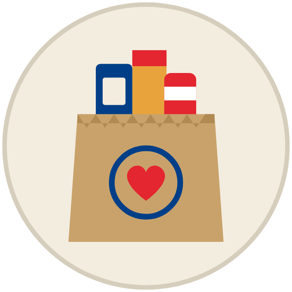
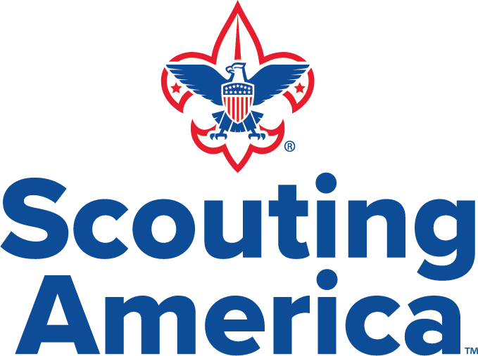

ROTTERDAM SCOUTS FOOD DRIVE
Drop off food
for
our neighbors
NOV
15
SUNDAY
10 AM to 2 PM
Rotterdam Community Center · 705 Curry Rd
Just pull up. Scouts will take it right from your car.


troop3054.org/food-drive
TROOP 3054 · PACK 3054
